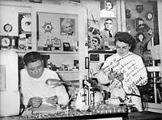
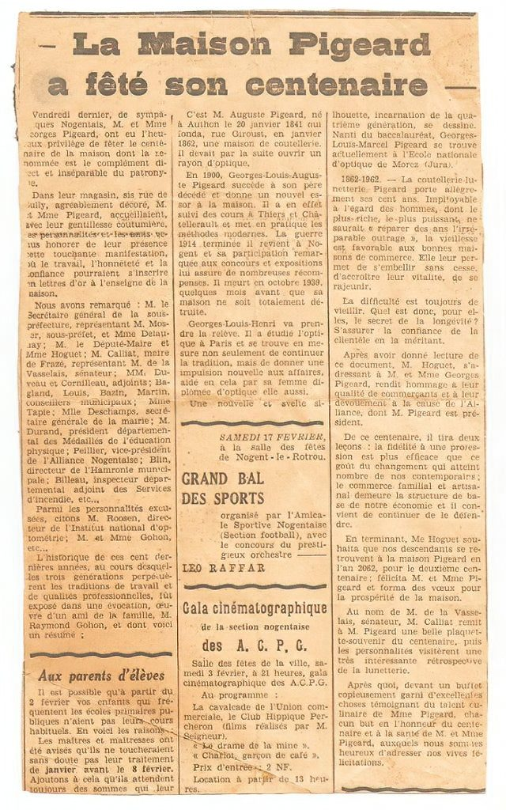
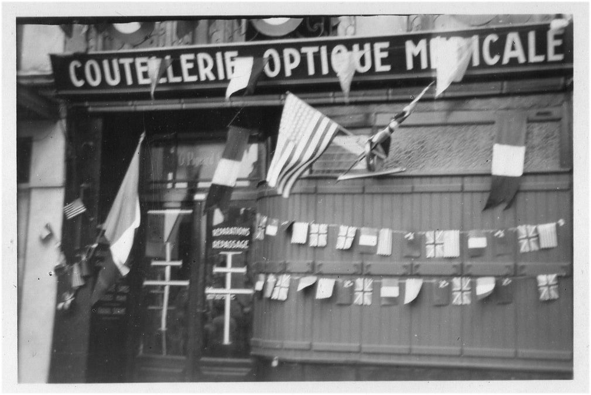
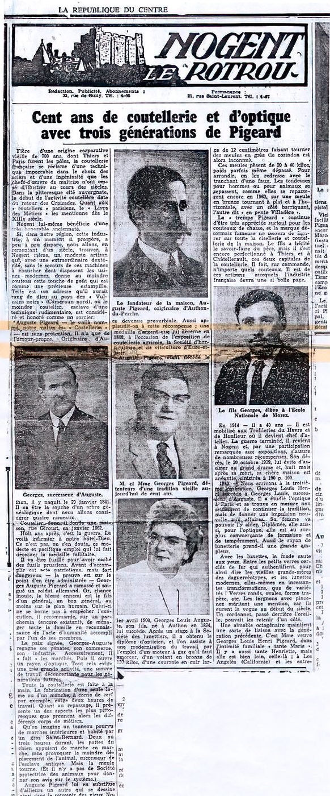
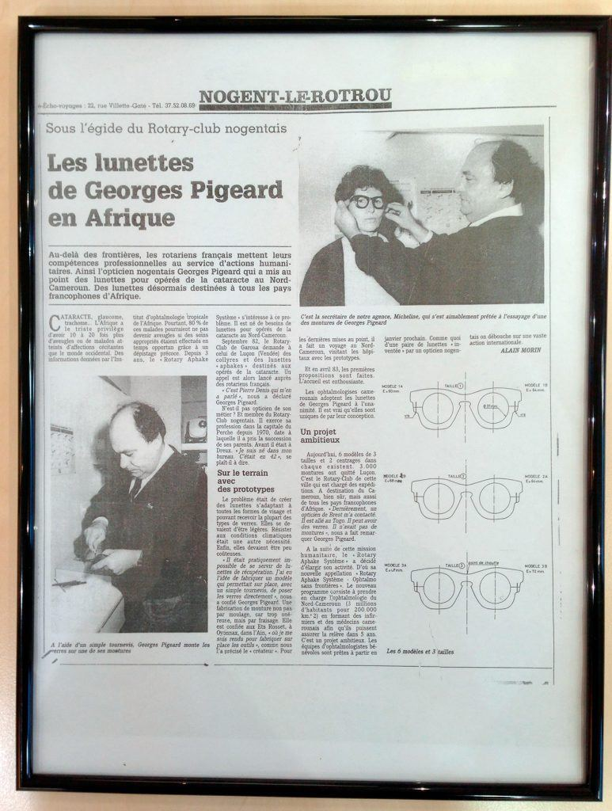
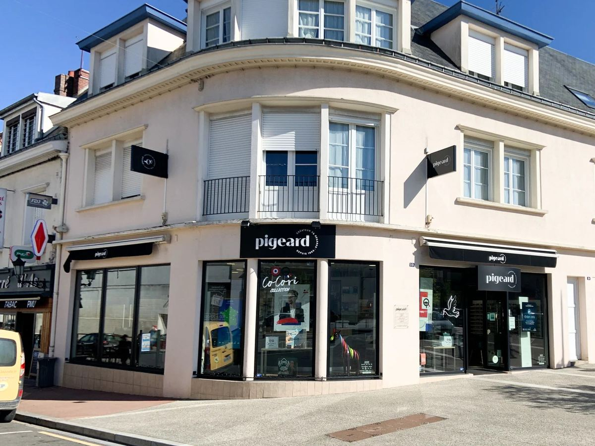
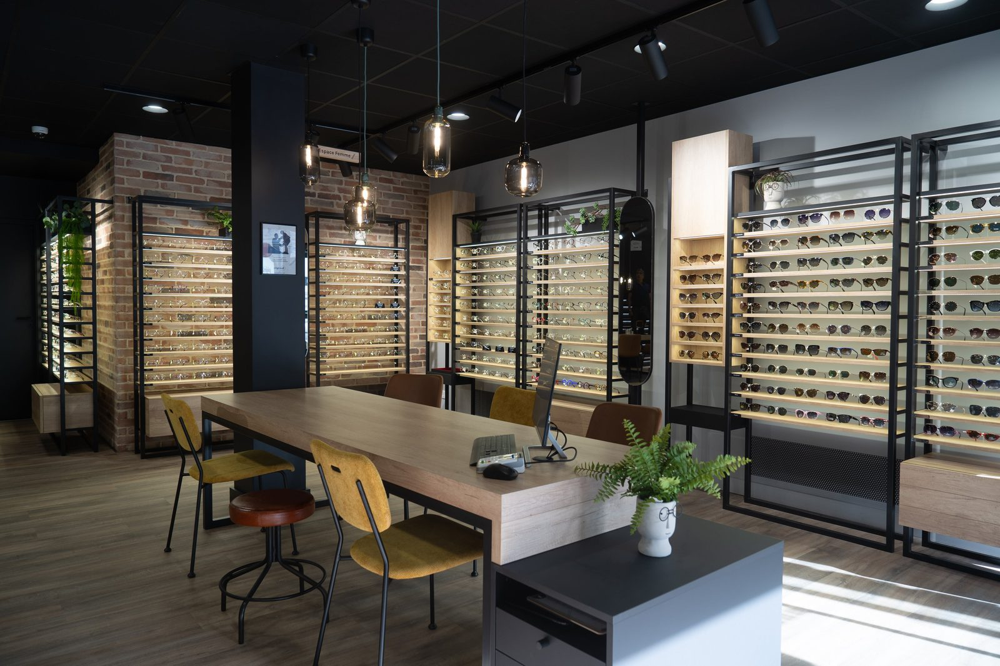

Tout commence en 1863, sous Napoléon III, dans l'échoppe d'Auguste Pigeard.
Maître coutelier originaire d'Authon-du-Perche, Auguste aiguise les lames… et façonne déjà les verres de lunettes sur ses meules. L'optique est née de la coutellerie. Héros de la guerre de 1870, il échappe de justesse au peloton — sauvé par un général allemand dont il avait soigné le fils.
le tout début de l'aventure
Georges Pigeard, formé à l'optique à Paris et maître coutelier de Thiers, fait la réputation des couteaux Pigeard — primés dans toute la région. Mais l'industrie bouscule la coutellerie : à la fin des années 30, l'optique devient le cœur de la maison.
l'artisan se réinventeEn juin 1944, le bombardement de Nogent-le-Rotrou rase le magasin. Quatre-vingts ans d'histoire familiale partent en fumée. L'aventure aurait pu s'arrêter là… mais la famille Pigeard n'avait pas dit son dernier mot.
on ne lâche rien
Georges et son épouse Fernande, opticiens tous les deux, relancent la maison au 6 rue de Sully. Chaque semaine, ils sillonnent les marchés ; les examens de vue se font dans les halls d'hôtels, l'équipement livré la semaine suivante. La renommée Pigeard gagne tout le Perche.
le métier dans les jambes
En 1963, la maison fête ses cent ans. Georges Pigeard, sorti de l'école d'optique de Morez, ouvre la première succursale à Brou et révolutionne la boutique : les montures sont présentées en libre accès, « à l'américaine » — une idée alors inédite en France.
toujours un temps d'avance
Au début des années 80, Georges Pigeard invente le « Rotary Aphaque System » et devient l'un des fondateurs d'« Ophtalmos Sans Frontières ». Ses lunettes ingénieuses pour les opérés de la cataracte — un verre standardisé monté au tournevis, sans machine ni électricité — seront fabriquées par centaines de milliers pendant plus de 15 ans.
l'optique au service des autres
Au décès de son père, Christophe Pigeard reprend la maison et ouvre en 2004 un troisième point de vente à La Loupe, là où son grand-père tenait jadis le marché. La famille veille, toujours, sur le regard de ses clients.
trois villes, une famille
En 2013, c'est à mon tour de faire de l'optique mon métier.
Formé à l'AEPO de Paris, je travaille aujourd'hui aux côtés de mon père. Trois magasins agrandis (Brou en 2014, Nogent en 2021), une équipe passionnée, et toujours la même idée : prendre soin de chaque regard comme s'il était unique. Parce qu'il l'est.
à mon tour de transmettre